Il punto viene usato come unità minima dell’immagine: ripetuto, variato e accostato, costruisce ritmo, densità, direzioni e campiture.
Classi prime • elementi del linguaggio visivo
Punto, linea e colore
Un percorso introduttivo sugli elementi fondamentali del linguaggio visivo. Il laboratorio è stato sviluppato in due direzioni: il punto, approfondito attraverso una sperimentazione ispirata all’arte aborigena australiana, e la linea e il colore, sperimentati nella costruzione di paesaggi divisi a metà.
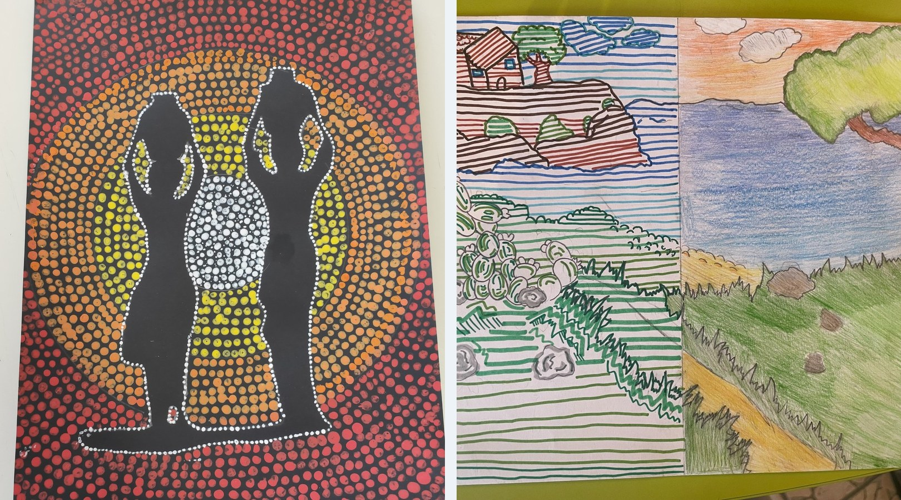
Presentazioni dell’attività
Dal segno elementare alla composizione
Il percorso parte dall’osservazione degli elementi minimi dell’immagine: il punto genera ritmo e campitura, la linea costruisce direzioni e contorni, il colore organizza atmosfera, profondità e contrasto.
Nella prima parte gli studenti lavorano sul punto e sulle superfici punteggiate; nella seconda confrontano due modi diversi di rappresentare lo stesso paesaggio, dividendo il foglio tra segno lineare e colore.
Apri punto, linea e colore ↗ Apri arte aborigena australiana ↗Obiettivi visivi
Tre elementi, due sperimentazioni
La linea permette di definire contorni, movimenti e strutture del paesaggio. Può seguire le forme, semplificarle o trasformarle in texture.
Il colore diventa strumento per distinguere piani, creare atmosfera e rendere più immediata la percezione dello spazio.
Nota sul riferimento culturale. La parte sul punto è una sperimentazione didattica ispirata al dot painting e non una copia di simboli sacri o motivi tradizionali specifici. Come approfondimento sul rapporto tra dot painting, arte aborigena australiana contemporanea e movimento di Papunya Tula è stato indicato il sito Creative Spirits – Are dot paintings traditional Aboriginal art?.
Il punto
Arte aborigena australiana
La costruzione dell’immagine avviene attraverso sequenze di punti, variazioni di dimensione, densità cromatica e contrasti tra figura e fondo.
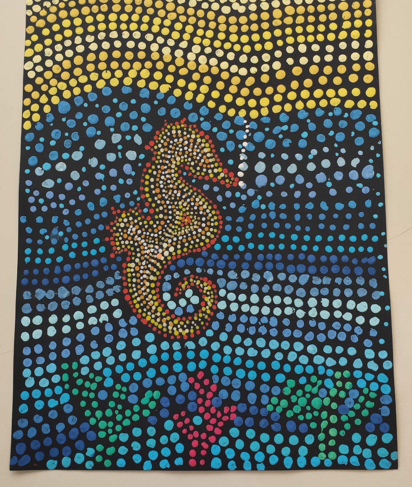
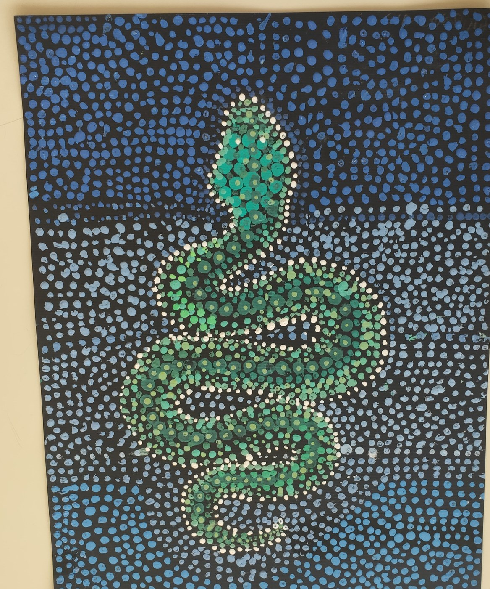
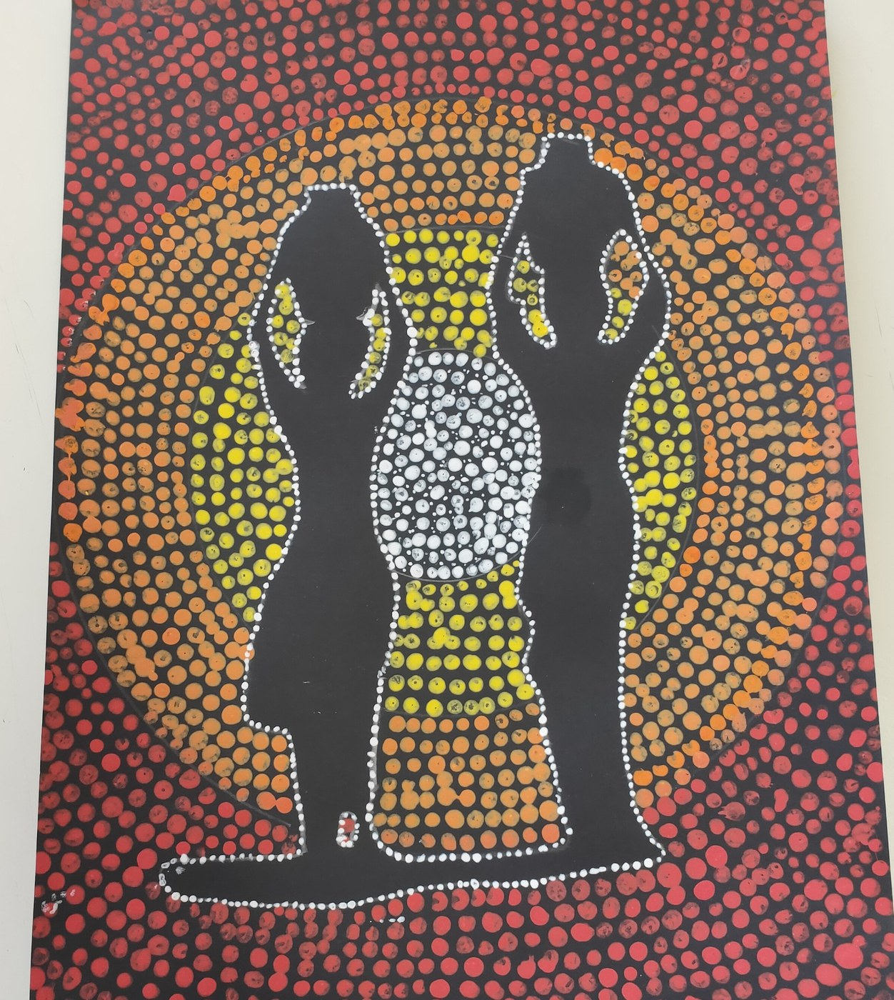
Linea e colore
Paesaggi divisi a metà
Ogni elaborato confronta due modalità espressive: da una parte il paesaggio costruito prevalentemente con la linea, dall’altra lo stesso spazio interpretato attraverso il colore.
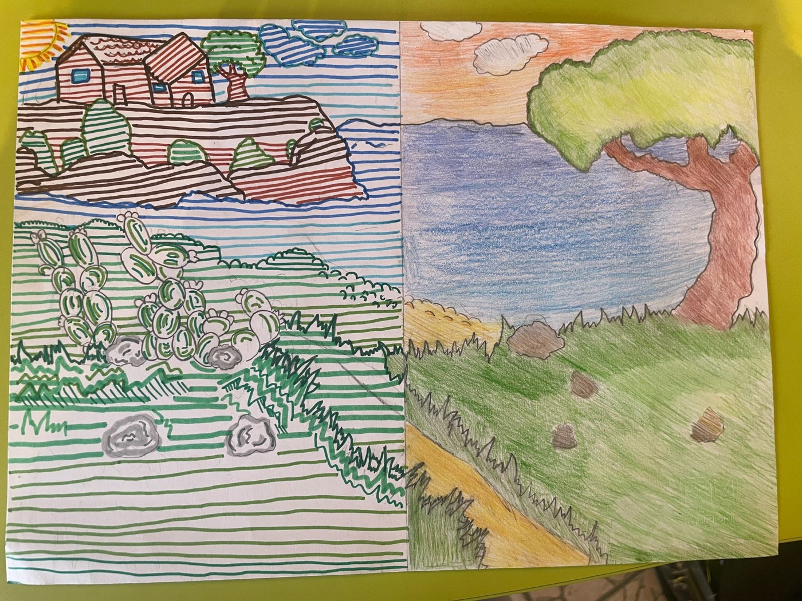
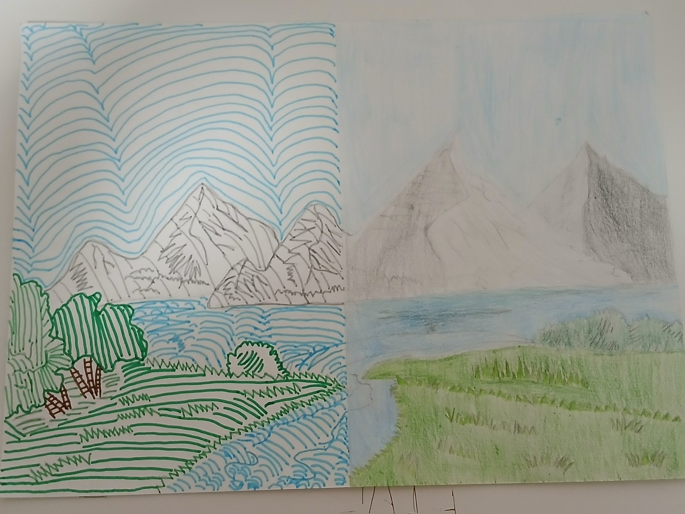
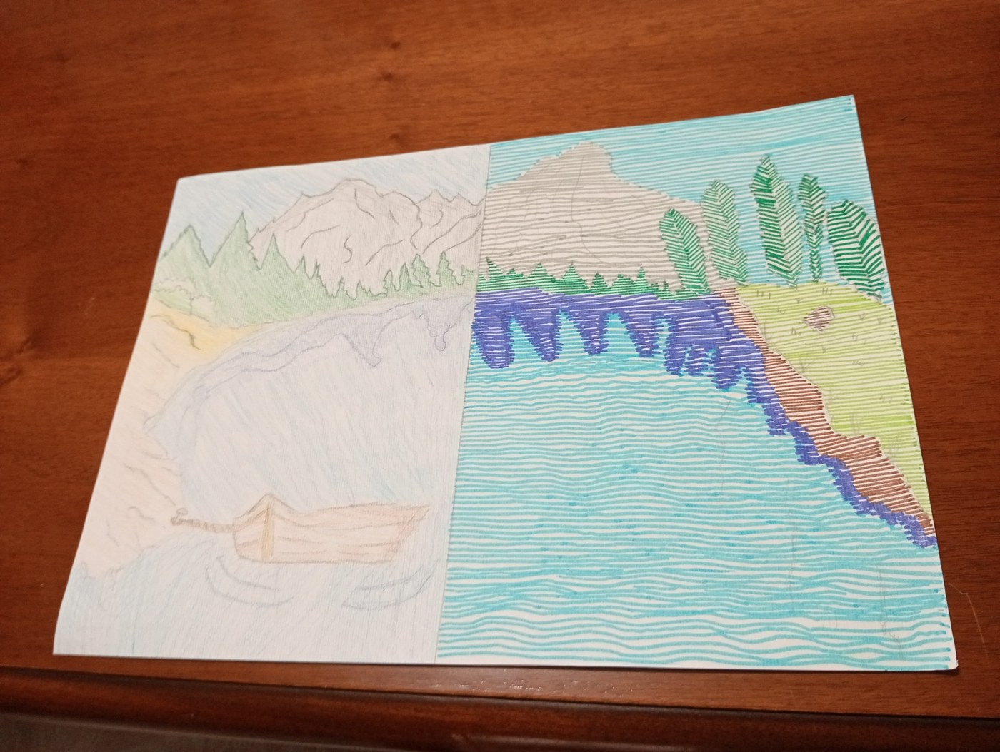
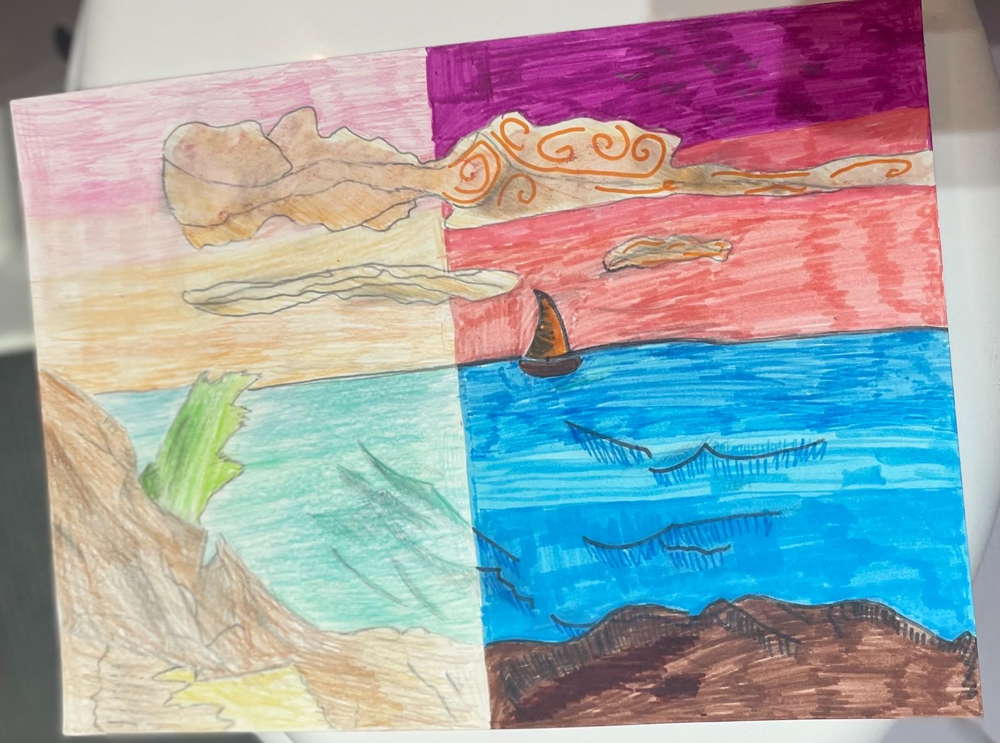
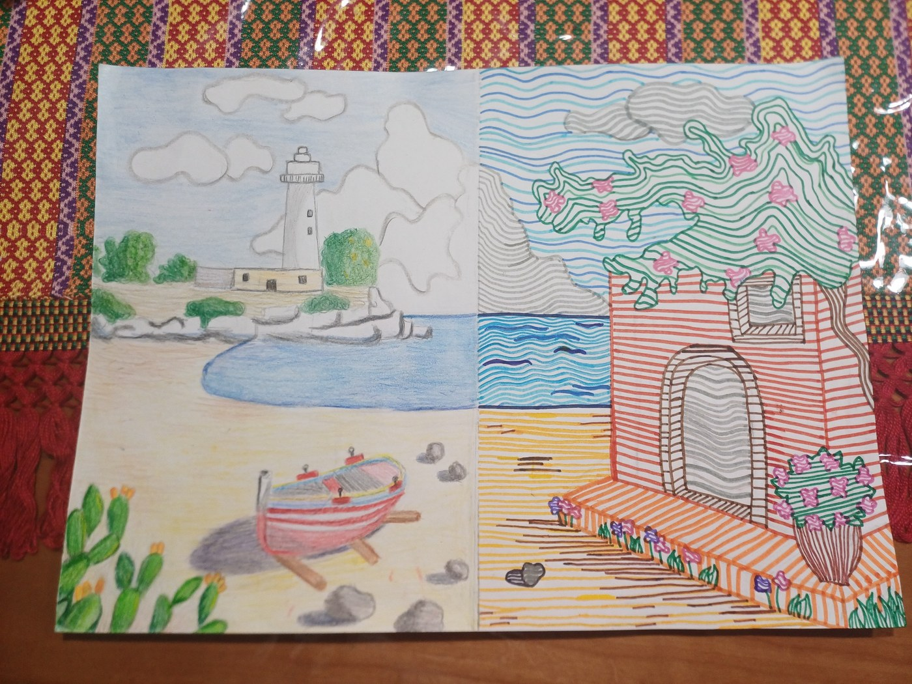
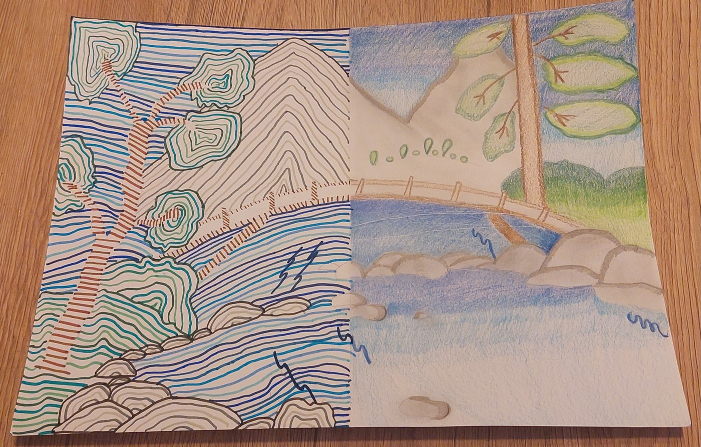
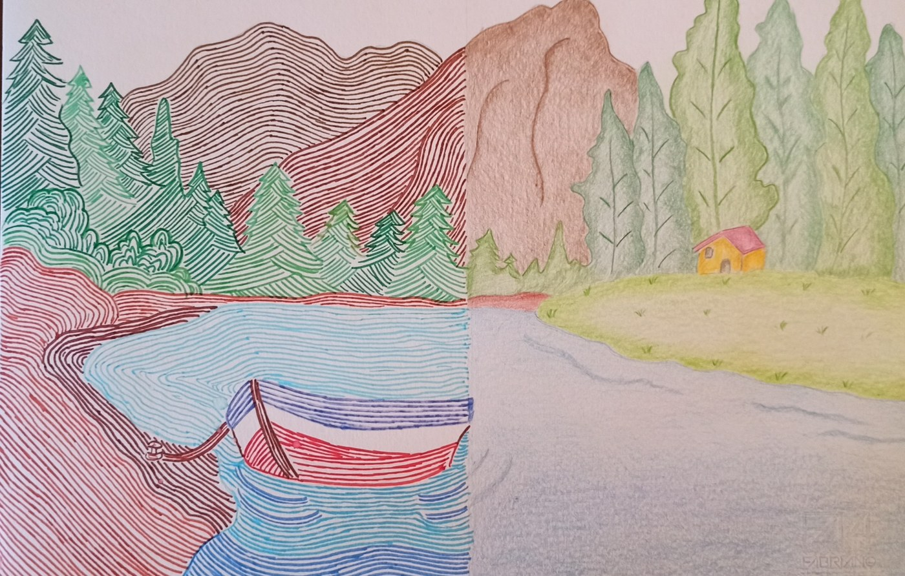
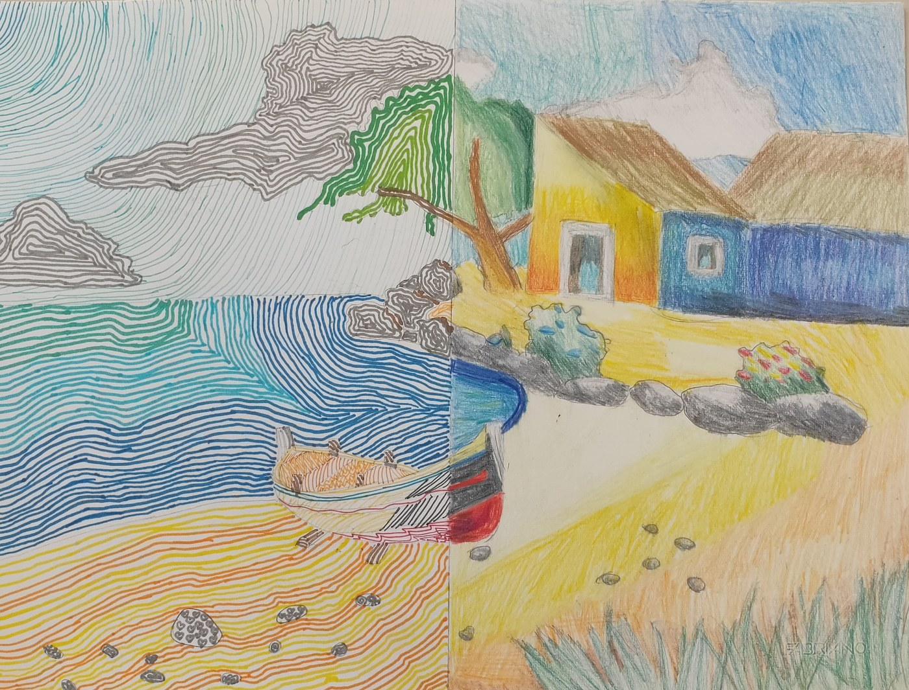
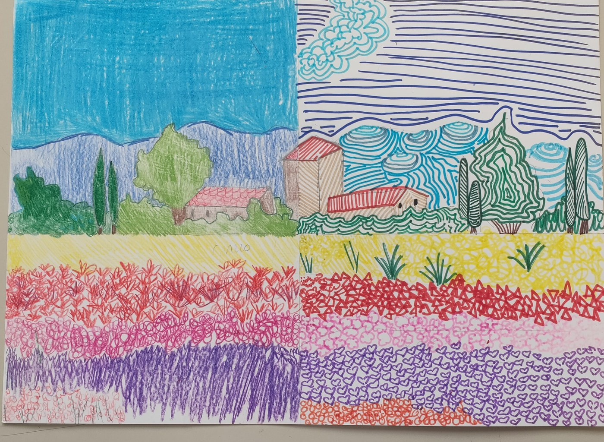
Le immagini sono state rinominate con etichette generiche e ripulite da metadati. Sono stati evitati nomi di studenti nei testi visibili, negli alt text e nelle didascalie.